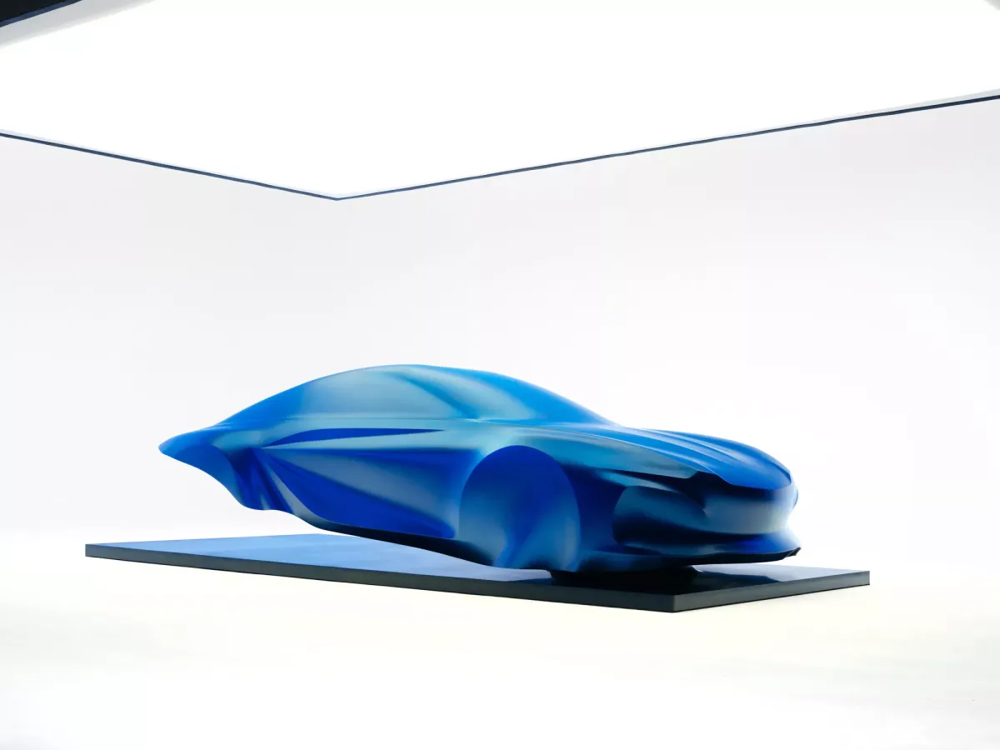
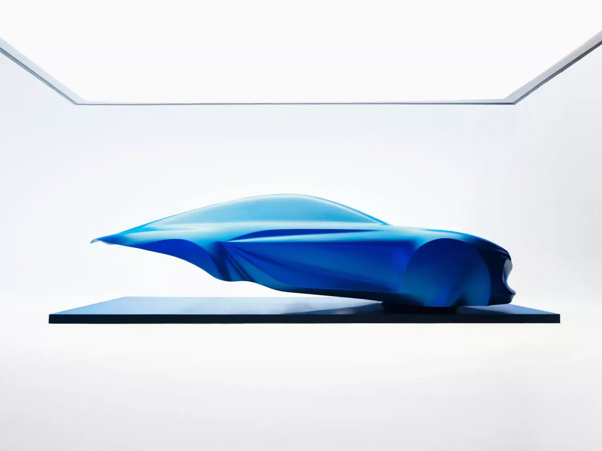
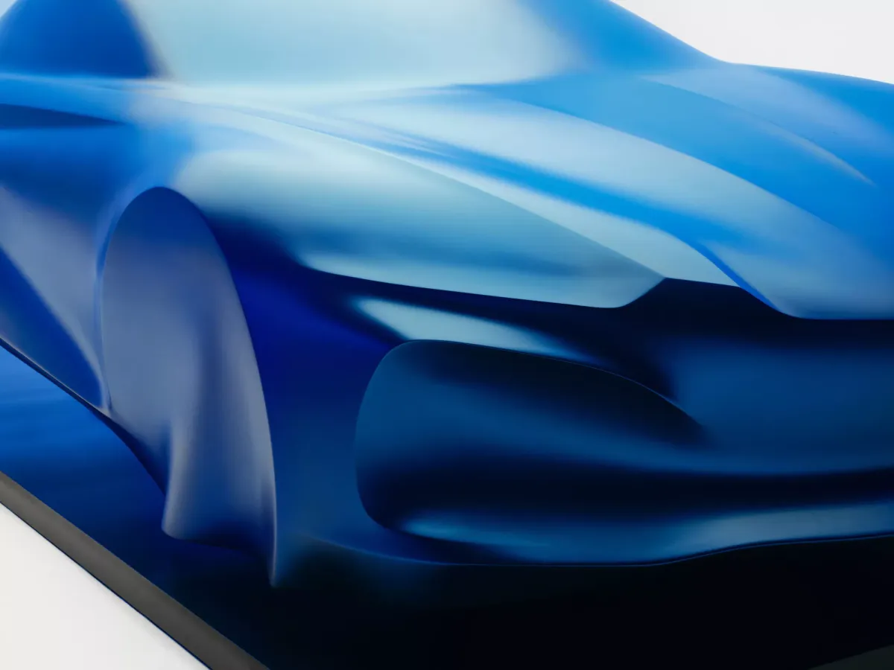
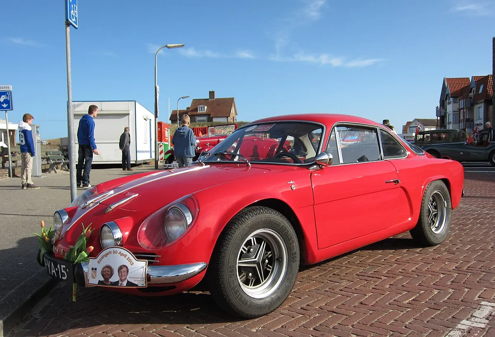
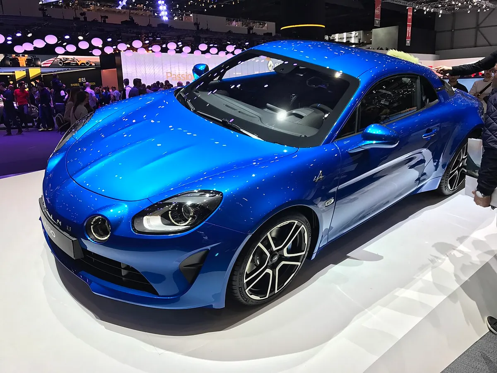
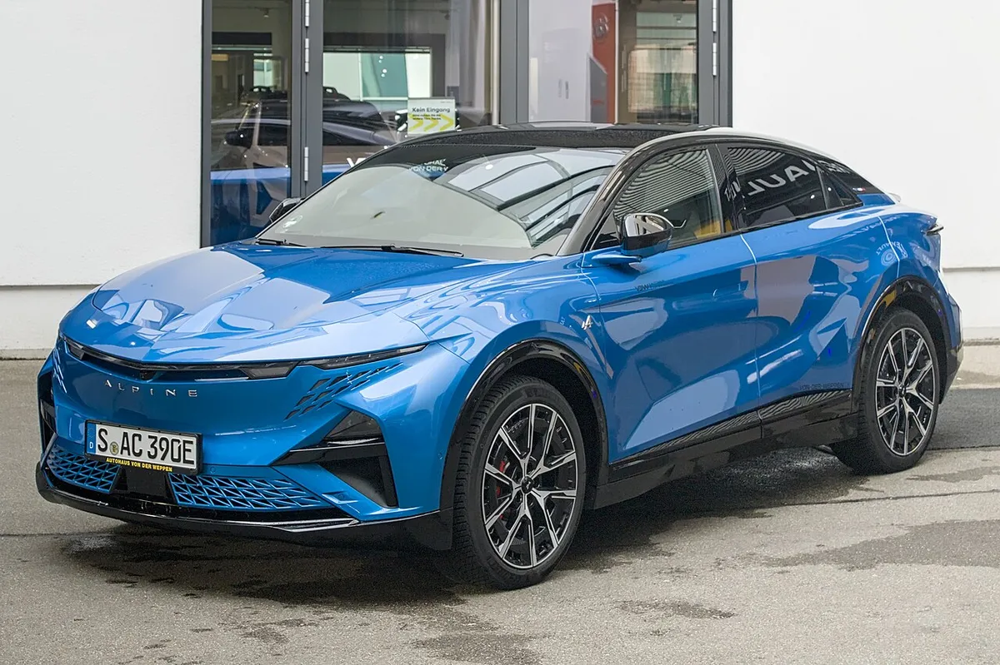

▲ 알핀이 공개한 3세대 A110 디자인 스컬프처 ⓒ Alpine
"세계 최초의 진정한 EV 스포츠카." 알핀이 3세대 A110를 이렇게 부르며 디자인을 처음 공개했다. 다만 양산차가 아니라 푸른 베일을 씌운 실물 크기 조각(스컬프처)이다. 알핀은 1955년 창립 이후 71년 동안 이 아이콘이 갱신되는 것은 이번이 두 번째이며, 이름으로는 세 번째 A110라고 밝혔다. 무대는 2026년 10월 12일부터 열리는 파리 모터쇼다.
이 글은 오토헤럴드 보도를 출발점으로, 알핀 공식 뉴스룸의 보도자료 4건(스컬프처·굿우드·디에프 공장·A110 종료 예고)과 Automotive World, Auto Express, Carscoops, PistonHeads를 교차해 정리했다. 오토헤럴드는 이를 '세 번째 변신'이라고 표현했는데, 알핀 원문은 '두 번째 갱신, 세 번째 세대'다.
1. 무엇이 공개됐나 — 푸른 베일 속 '팬텀 볼륨'
알핀은 이번 조각을 '팬텀 볼륨(phantom volume)'이라는 개념으로 소개했다. 디자이너가 차의 비례를 검토할 때 천을 씌워 형태를 읽는 방식을 조각 작품으로 옮긴 것이다. 알핀은 베일을 씌우는 것이 차를 가리는 것이 아니라 비례와 의도를 읽게 해 준다고 설명했다. 푸른 베일은 "가벼움과 공기역학"을 나타내며, 영감의 출처는 콩코드가 음속을 돌파하는 순간이다.

▲ 앞쪽 45도에서 본 스컬프처 — 낮은 차체와 곡면 볼륨이 베일 아래로 드러난다 ⓒ Alpine 뉴스룸
알핀은 이 조각이 양산 차체를 그대로 보여주는 것이 아니라 디자이너의 해석을 담은 예술적 비전이라고 분명히 했다. 실제 양산 디자인은 추후 공개된다.
2. 디자인 단서 — V자 코, 샤크 노즈, 물방울형 캐빈
| 부위 | 내용 |
|---|---|
| 전면 | V자형 프런트 엔드와 이중(듀얼) 라이트 시그니처 |
| 앞모습 비례 | 샤크 노즈(상어 코) 형태 |
| 캐빈 | 근육질 휠 아치 사이에 놓인 물방울형(티어드롭) 캐빈 |
| 측면 | 현대적이고 조각적으로 다듬은 측면 모델링, 낮게 내려가는 후면 |
| 표면 | 긴장감 있는 면과 곡면 볼륨의 대비, 알핀은 "매우 역동적이고 곡선적이며 순수하다"고 표현 |

▲ 측면에서 본 스컬프처 — 물방울형 캐빈과 낮은 후면 라인이 보인다 ⓒ Alpine 뉴스룸

▲ 휠 아치 부분을 가까이서 본 모습 — 베일이 만드는 주름이 근육질 볼륨을 강조한다 ⓒ Alpine 뉴스룸
Carscoops는 이 조각이 현행 A110보다 "더 낮고 길어 보이는" 슈퍼카에 가까운 비례라고 평가했다. 이는 매체의 해석이며, 이번 스컬프처가 그대로 양산 디자인이라는 뜻은 아니다.
📍 조각은 최종 디자인이 아니다
알핀은 실제 양산 차체를 공개하지 않았다. 헤드램프 형태나 실내는 스컬프처만으로 판단할 수 없어, 각 매체의 예측은 참고용으로만 읽는 것이 좋다.
3. 71년 역사의 세 번째 A110 — 초대와 2세대
알핀은 1955년 6월 22일 장 레데레(Jean Rédélé)가 프랑스 디에프에서 세웠다. 알핀 보도자료는 그가 1962년 내놓은 베를리네트가 브랜드 DNA를 상징한다고 소개했고(위키백과 등은 생산 기간을 1961~1977년으로 적는다), 이 차가 1973년 월드 랠리 챔피언십(WRC)의 첫 우승 차량이 됐다고 밝혔다.

▲ 초대 알핀 A110(1970년대형, 1300 VC) — 둥근 헤드램프와 작고 낮은 차체가 특징이다 ⓒ Rutger van der Maar, CC BY 2.0

▲ 2017년 제네바에서 공개된 2세대 A110 — 초대의 이미지를 현대적으로 재해석했다 ⓒ NauyopTaiwan, CC BY-SA 4.0
| 세대 | 공개·생산 | 핵심 특징 |
|---|---|---|
| 초대 베를리네트 | 1960년대 초 등장(알핀은 1962년으로 표기), 1970년대 후반까지 생산 | 경량 리어 엔진 랠리카, 1973년 WRC 우승 |
| 2세대 | 2017년 제네바 모터쇼 공개, 디에프에서 28,701대 생산 | 2026년 7월 1일 마지막 차량 생산, 알핀은 디에프 공장 통산 A110 35,450대라고 밝힘 |
| 3세대 | 2026년 9월 디자인 스컬프처, 양산 공개는 이후 | 신형 APP 플랫폼 기반 전기 스포츠카 |
알핀은 2세대 A110가 2026년 중반까지 디에프에서 생산된 뒤 3세대로 넘어간다고 예고해 왔다. 재고를 제외하면 A110 신차를 새로 살 수 없는 공백기가 생긴 셈이다. 두 세대의 공통점은 가벼움과 민첩함이며, 3세대가 이 DNA를 전기차로 이어갈 수 있을지가 관건이다.
4. 파워트레인 — 알핀이 직접 밝힌 것
스컬프처 보도자료에는 파워트레인 언급이 없다. Automotive World가 "전기차 여부를 알핀이 명시하지 않았다"고 쓴 것은 이 보도자료만 보면 맞다. 그러나 알핀은 7월 굿우드 페스티벌에서 A110 FUTURE 시험차를 공개하며 3세대가 "세계 최초의 진정한 EV 스포츠카"가 될 것이라고 직접 밝혔다. 7월 9일 F1 드라이버 피에르 가슬리가 시험차를 몰고 굿우드 힐을 올랐다.
| 항목 | 내용 |
|---|---|
| 플랫폼 | 알핀 퍼포먼스 플랫폼(APP) — 다양한 차체·구동 방식을 한 플랫폼으로 소화하는 모듈형 구조 |
| 차체 | 2인승 쿠페 레이아웃, 현행 A110 차체를 늘려 APP 치수에 맞춘 시험차 |
| 배터리 | 앞 25%·뒤 75%로 나눈 듀얼 팩, 800V·셀투팩, 고압 다이캐스팅 알루미늄 케이스 |
| 전동 파워트레인 | 후륜 듀얼 모터, 액티브 토크 벡터링 2.0, 실리콘카바이드 인버터, 최대 21,500rpm |
| 충전 | 400V 부스트 충전 시스템 탑재 |
| 무게 배분 | 7월 사전 공개 자료에서 전:후 40:60 균형이라고 밝힘 |
| 개발 도구 | 운전석 시뮬레이터 4만 5,000km 이상 주행 |
다만 출력, 배터리 용량, 주행거리, 최종 무게는 알핀이 공개하지 않았다. 시험차 수치가 양산차와 같다는 보장도 없다.
5. 알핀이 밝히지 않은 사전 보도 — 어디까지 믿을까
| 항목 | 보도 내용 | 매체 |
|---|---|---|
| 차체 중량 | 약 1,450kg 추정 | Auto Express |
| 주행거리 목표 | 약 600km | Auto Express |
| 파생 모델 | 컨버터블 스파이더 확정 보도 | Auto Express |
| 현행 대비 무게 | 약 300kg 증가 | Carscoops |
| 내연기관 가능성 | 플랫폼이 내연기관 탑재도 수용하도록 설계됐고 가솔린 파생 모델 결정은 2026년 말께라고 알핀 CEO가 언급했다는 보도 | Carscoops |
| 미국 판매 | 충돌시험 진행 중, 내연기관 옵션이 있어야 미국 판매 가능성이 있다는 보도 | Carscoops |
위 표의 내용은 알핀의 이번 보도자료에 없는 개별 매체의 사전 보도다. 발표 시점이 매체마다 다르고 알핀이 공식 확인하지 않았으므로, 최종 사양은 바뀔 수 있다.
6. 출시는 언제? — 매체별로 엇갈리는 시점과 알핀의 전기차 라인업
알핀은 이번에 출시 시기·가격·크기를 밝히지 않았다. 매체별 전망은 갈린다. PistonHeads는 실제 차가 2027년에 나올 것으로 봤고, Auto Express는 2027년 후반 풀 공개 후 출시를 전망했다. Carscoops는 이 차를 2028년형으로 표현했다. 알핀은 2025년 10월 보도자료에서 3세대 A110를 "내년에 소개하겠다"고 밝혔는데, 이번 스컬프처가 그 첫 단계인지 양산차 공개를 뜻하는지는 명확하지 않다. 파리 모터쇼 개막일도 알핀 보도자료 본문은 10월 12일, 같은 페이지의 FAQ는 10월 13일로 다르게 표기했다.

▲ 알핀은 이미 전기 스포트 패스트백 A390과 핫해치 A290을 판매하고 있다 ⓒ Alexander Migl, CC BY-SA 4.0
알핀은 이미 전기 핫해치 A290과 470마력의 5인승 스포트 패스트백 A390을 내놨다. A290은 알핀이 밝힌 대로 브랜드에서 가장 많이 팔리는 전기 핫해치다. A110는 여기에 더해 알핀 첫 순수 전기 스포츠카가 된다.
✅ 지금까지 확인된 사실 vs 미확인
· 확인: 10월 12일부터 파리 모터쇼에서 디자인 스컬프처 전시, V자 전면부·이중 라이트·샤크 노즈 디자인
· 확인: 신형 APP 플랫폼 기반 순수 전기 스포츠카, 후륜 듀얼 모터·800V (알핀 굿우드 보도자료)
· 확인: 현행 2세대 A110는 2026년 7월 1일 생산 종료
· 미확인: 출력, 배터리 용량, 주행거리, 크기, 가격, 출시 시기, 국내(한국) 공식 판매 계획
7. 한국 소비자에겐 어떤 의미인가
현재 확인된 정보로는 국내 도입 계획을 알 수 없다. 다만 PistonHeads는 3세대 A110가 포르쉐 718 전동화 모델과 같은 2027년에 나올 것으로 전망했다. 가벼운 미드십 스포츠카가 배터리 시대에 어떻게 성격을 지킬지가 업계의 관심사다.
8. 요약
알핀이 3세대 A110의 디자인을 푸른 베일 조각으로 처음 공개했다. 파리 모터쇼(2026년 10월 12일부터)에서 전시되며, V자 전면부·이중 라이트·샤크 노즈·물방울형 캐빈이 특징이다.
3세대는 신형 APP 플랫폼 기반 순수 전기 스포츠카다. 스컬프처 보도자료에는 없지만 알핀이 7월 굿우드 보도자료에서 후륜 듀얼 모터·800V 등 시험차 사양을 밝혔다. 1,450kg·600km 등은 매체의 사전 보도일 뿐이다.
출시 시점은 2027~2028년으로 매체마다 엇갈린다. 최종 양산 디자인과 사양은 이후 공개를 기다려야 한다.